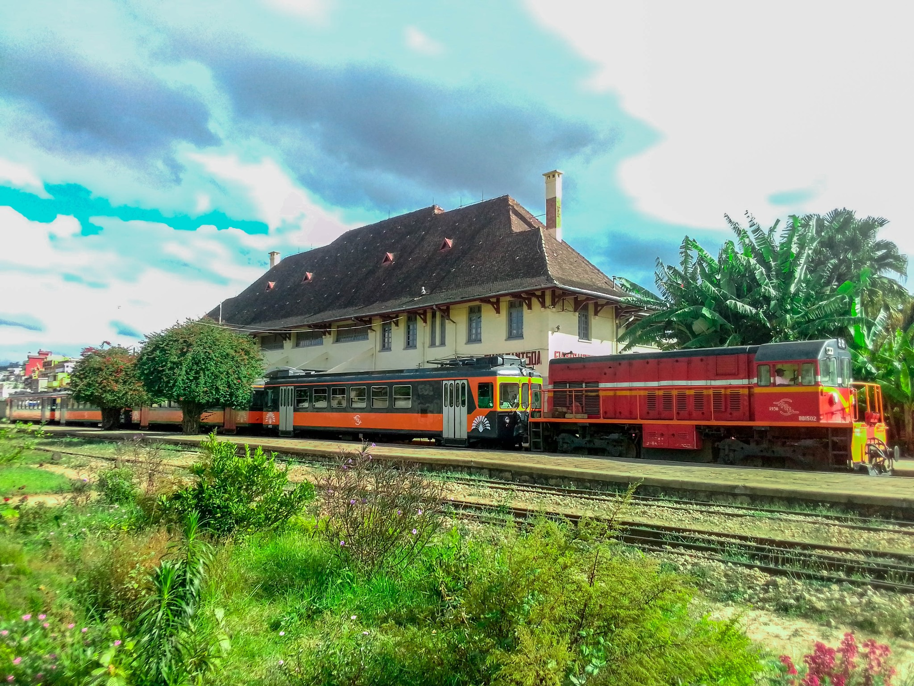

tourisme lac

profiter le beaute du lac.
tourisme de train
profiter le voyage de train
La perle verte des Hautes Terres de Madagascar
Sahambavy est un village situé près de Fianarantsoa, célèbre pour ses vastes plantations de thé, ses paysages verdoyants et son lac paisible. C’est une destination idéale pour les amoureux de la nature et du calme.
Les visiteurs peuvent profiter de randonnées, de balades autour du lac, de visites des plantations de thé et de découvertes culturelles avec la population locale.
Email : guidesahambavy@gmail.com
Téléphone : +261 34 00 000 00
Les visiteurs peuvent profiter de visites des plantations.
profiter le beaute du lac.
profiter le voyage de train